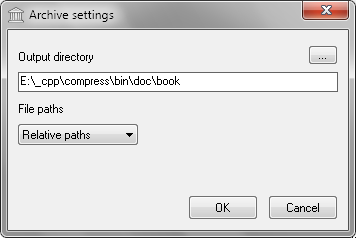

Uncompression settings window consist of
three buttons, edit field, file paths and label.
| Item | Description |
| ... | Output directory over file dialog. |
| OK | Close window and start uncompression. |
| Cancel | Close window and return to main window. |
| Item | Description |
| Output directory | Destination location of data. |
| Item | Description |
| File paths | Without, relative and full paths. |